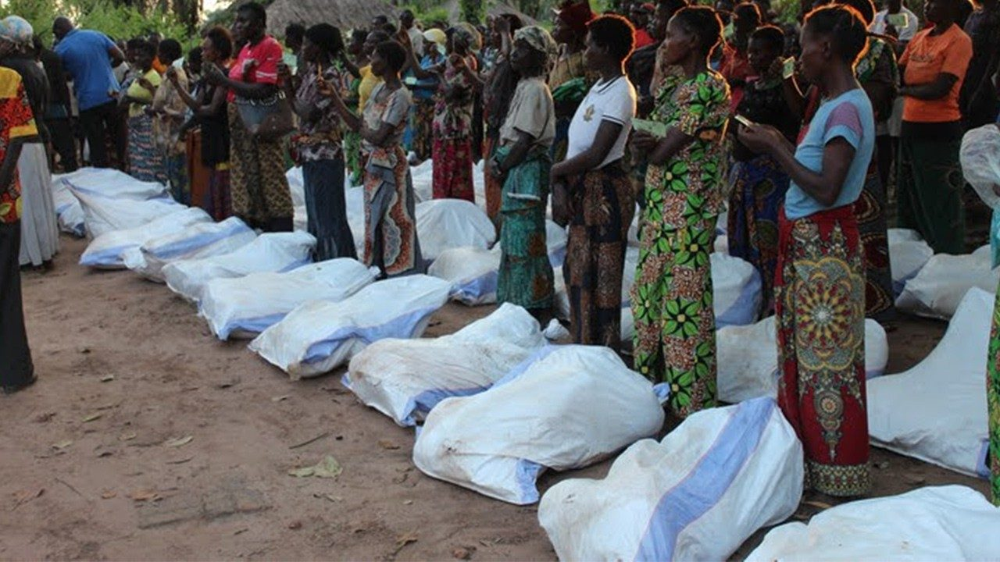

Nos Actions Principales
Santé & Bien-être
La Caritas soutient les dispensaires et centres de santé communautaires, garantissant l’accès aux soins pour tous, surtout dans les zones rurales.
Éducation & Formation
Nous œuvrons pour offrir aux enfants défavorisés un accès à l’éducation et des formations professionnelles adaptées aux jeunes.

Développement Communautaire
Nos projets soutiennent l’agriculture durable, l’accès à l’eau potable et la promotion de l’entrepreneuriat local.
Soutenez nos œuvres caritatives
Votre don contribue à changer des vies. Ensemble, construisons un monde plus juste et fraternel. Vous pouvez soutenir nos actions via virement, mobile money ou collecte locale.
Faire un don maintenant